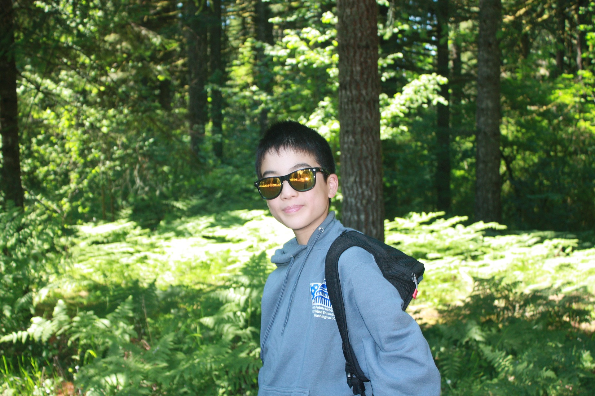
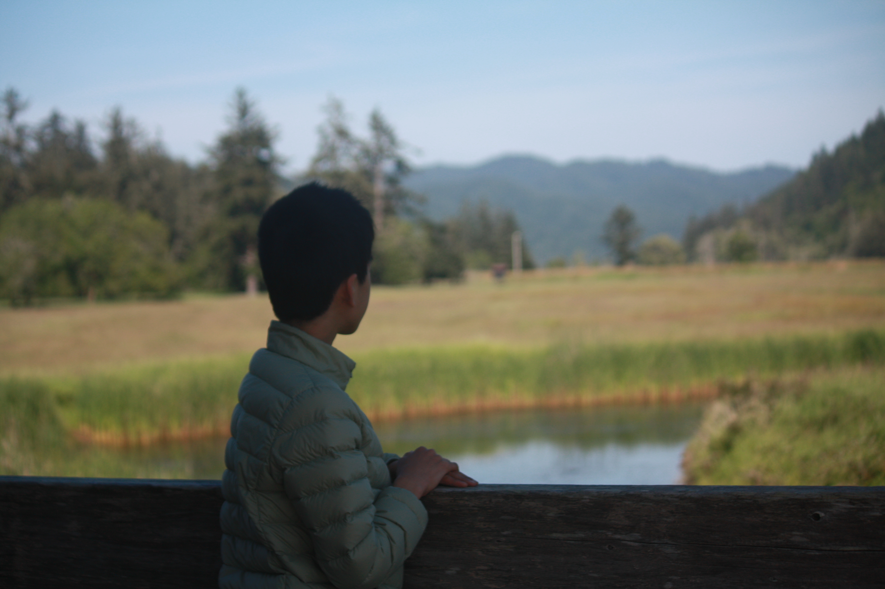
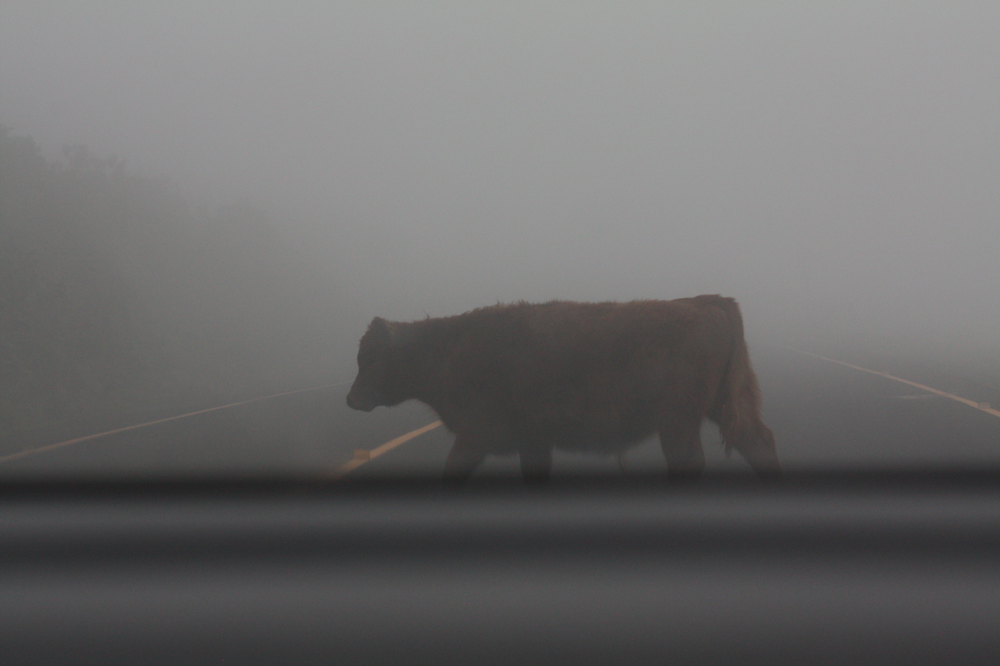
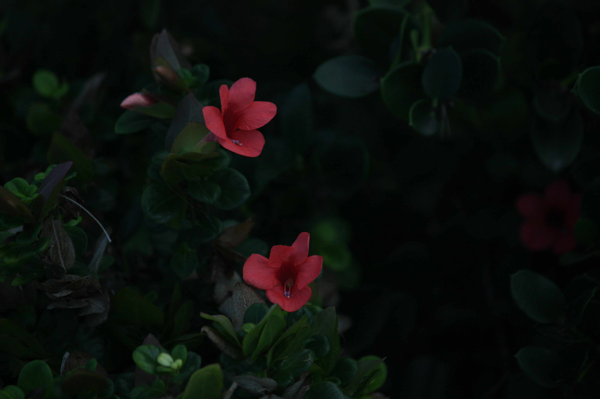

Hi, I'm Alex. I made this photo portfolio website to showcase my work in photography in a way that is unique to my style. Most of the time spent on this passion project was dedicated to creating this website, though it also took me many hours to capture satisfactory photoshoots of animals.

How did I come up with this idea of a photo portfolio? Last summer, my family unearthed my dad's camera from the storage room, which was from around 2010. When my dad showed me the telephoto lens, a lens that can zoom in a crazy amount while keeping high image quality. You don't see this kind of quality on your average phone. When I received the passion project prompt, I knew this was the perfect opportunity to test my skills in both photography and web development.

Photography allows me to freeze a temporary moment forever in time with the click of a button. Take my picture of this cow, for example. We were driving through when this large animal decided to cross. A sure surprise, and I had to scramble for my camera. It's all about getting your hands dirty and being out there. The first day? I spent hours in my local park, looking for rabbits. None showed up, except for one that ran away the instant I saw it. The next day, I found quite a few bunnies, as well as the red-shouldered hawk that you are able to see in my Gallery 1.

Sure, animal photography is pretty luck-based, but you just have to keep working until you get what you want or are fulfilled with. I was fulfilled with my pictures of baby geese at English Springs Park, a decent-sized pond off of Grand and haven for ducks and Canada geese. I didn't know I would be encountering an all-out duck brawl on the water. When you get that opportunity to shoot something like that, you have to take it. Photography is not a game of hesitation and critical thinking. You go out there, find something cool, and shoot it before it disappears.

Plant photography is slightly different. They stay still, but there are always different angles you can get to achieve better lighting, personality, or composition. Plus, time of day matters, and you don't always have a guide that tells you where the best flowers are right now. That's also a hard part of animal photography: you don't know where an animal will be next. You just have to get out there and take photos. The opportunities will come to you. That's why I prefer wildlife photography over landscape photography. Anyone can take a picture of a spot. Not everybody has the time and patience required to wait for an animal to come out of the bushes or forest.